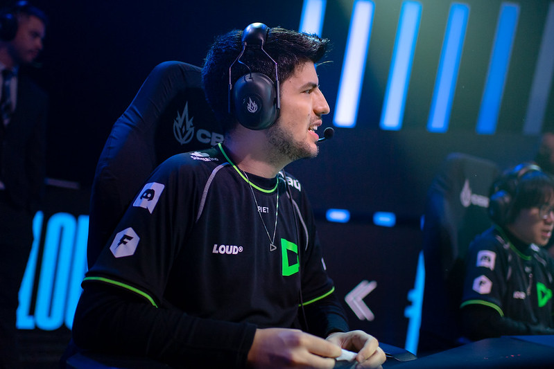
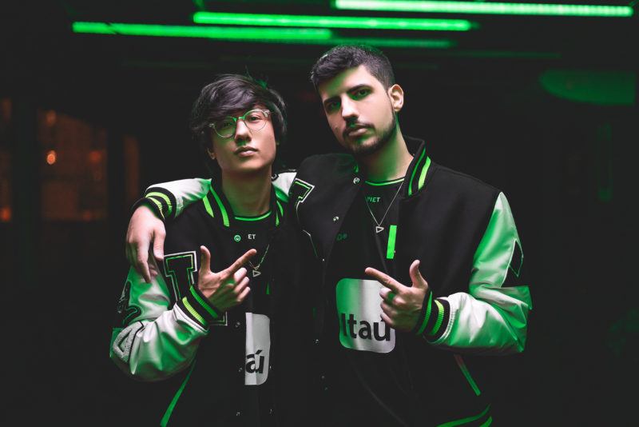

CBLOL 2022: “É mais gostoso ganhar da paiN”, admite Robo após título
Em coletiva realizada no último sábado (3), logo depois da vitória por 3×0 sobre a paiN Gaming e conquista inédita do CBLOL pela LOUD, o top laner, Robo foi questionado se vencer sua ex-equipe tem um sentimento especial, no que ele admitiu que sim e ainda conquistando o campeonato.
"Se eu dissesse que não, estaria mentindo. É mais gostoso sim ganhar da paiN, é sempre muito bom ganhar do antigo time, mas ainda não sinto que estou com dever cumprido, meu sonho é ir bem internacionalmente, agora temos o Worlds, um novo desafio. Eu fiquei bastante desapontado no split passado, comigo mesmo, então decidi que daria a volta por cima agora no 2º split.
Tinowns também respondeu ao questionamento e disse que a sensação é de alívio em conquistar o título inédito para a organização, mas endossa o coro e diz que ainda falta uma boa campanha internacional.
Quando foram anunciados como novos reforços para a LOUD, Robo e Tinowns afirmavam que chegaram para finalmente colocar a organização como grande postulante a títulos no cenário brasileiro, e depois de uma primeira etapa decepcionante onde sequer se classificaram aos playoffs, enfim cumpriram esta parte do objetivo.
Tin e Robo chegaram prometendo títulos para a LOUD e o objetivo foi cumprido (Foto: Divulgação/LOUD)
Já desde a paiN Gaming, a dupla afirma que deseja voltar ao palco internacional e fazer uma campanha considerada digna, isto é, conseguir a classificação à Fase de Grupos no Worlds e MSI, e agora pela Tropa, terão mais uma chance.
Com o resultado do CBLOL 2022, a LOUD garantiu o seu primeiro título e vaga no Worlds 2022, o mundial de LoL. O torneio está previsto para acontecer entre os dias 29 de setembro e 5 de novembro.